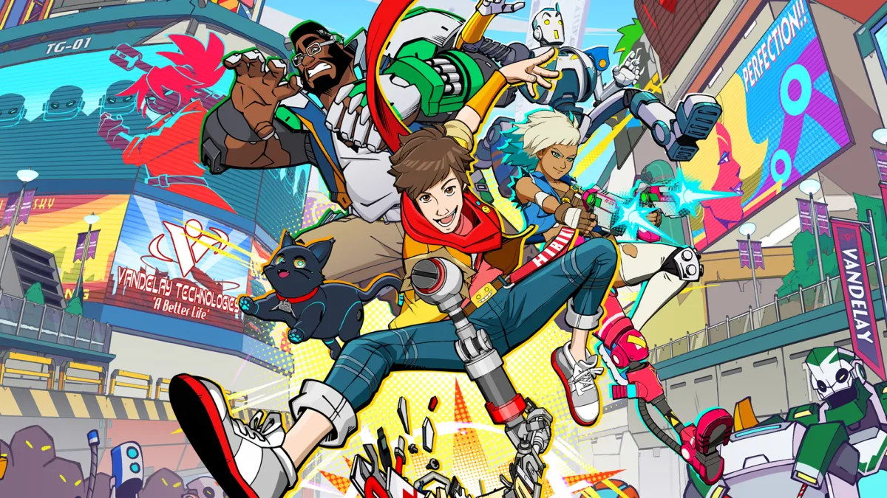

1 – Dead Space
Desenvolvido pelo Motive Studio, da Electronic Arts, o remake de Dead Space entregou uma versão aprimorada que acerta em cheio ao preservar a experiência original e expandir suas qualidades ao mesmo tempo.
A nova versão expandida do jogo de 2008 apresentou uma jogabilidade repaginada, gráficos modernizados e até áudio atualizado, alegrando o coração dos fãs de terror.
Data de lançamento: já disponível
Plataformas: PlayStation 5, Xbox Series X|S, PC
2 – Resident Evil 4

Após quase 20 anos, o clássico do survival horror está de volta! O remake de Resident Evil 4 chegou em março de 2023 e agradou (e muito) a crítica especializada e os fãs — incluindo nós, do NerdBunker.
Desenvolvido com o motor gráfico RE Engine, o jogo é uma recriação fiel ao original, apresentando gráficos e jogabilidade atualizados para deixar a experiência mais moderna, mas sem perder a essência.
Data de lançamento: já disponível
Plataformas: PlayStation 5, Xbox Series X|S, PC
3 – Hi-Fi Rush
De surpresa, a Tango Gameworks lançou Hi-Fi Rush, jogo que mistura ação e ritmo, no finalzinho de janeiro — e que já se tornou um dos mais aclamados do ano.
O game conquistou muitos jogadores pelo gameplay frenético, visual colorido, personagens memoráveis e humor bem equilibrado entre o pastelão e o culto.
Data de lançamento: já disponível
Plataformas:Xbox Series X|S, PC
4 – Hogwarts Legacy

Hogwarts Legacy é um RPG que se passa no universo de Harry Potter (antes dos livros) e coloca o jogador como um estudante de Hogwarts, contando com aulas de magia, embates entre as Casas e lutas com varinha.
Data de lançamento: já disponível
Plataformas: PlayStation 4, PlayStation 5, Xbox One, Xbox Series X|S, PC.
5 – Dead Island 2
Ninguém acreditava, mas 2023 teve Dead Island 2! Após oito anos em desenvolvimento e várias trocas de estúdio, o jogo finalmente chegou com humor ácido e muita pancadaria contra mortos-vivos.
A sequência não deixou os problemas de bastidores afetarem o resultado final, apresentando um RPG de ação bem-humorado, competente e banhado em sangue de zumbis.
Data de lançamento: já disponível
Plataformas: PlayStation 4, PlayStation 5, Xbox One, Xbox Series X|S, PC.